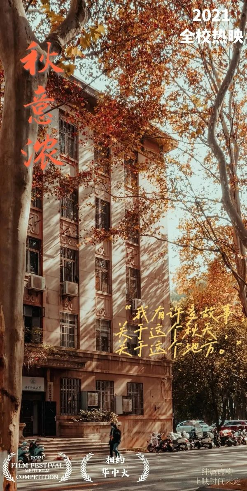

华中科技大学
华中科技大学是国家教育部直属重点综合性大学，由原华中理工大学、同济医科大学、武汉城市建设学院于2000年5月26日合并成立，是国家“211工程”重点建设和“985工程”建设高校之一，是首批“双一流”建设高校。 学校校园占地7000余亩，园内树木葱茏，碧草如茵，环境优雅，景色秀丽，绿化覆盖率72%，被誉为“森林式大学”。学校教学科研支撑体系完备，各项公共服务设施齐全。 学校学科齐全、结构合理，基本构建起综合性、研究型大学的学科体系。拥有哲学、经济学、法学、教育学、文学、理学、工学、医学、管理学、艺术学、交叉学科等11大学科门类；设有112个本科专业，48个硕士学位授权一级学科，46个博士学位授权一级学科，39个博士后科研流动站。现有一级学科国家重点学科7个，二级学科国家重点学科15个（内科学、外科学按三级计），国家重点（培育）学科7个。在教育部第四轮学科评估中，我校44个学科参评，全部上榜，其中机械工程、光学工程、生物医学工程、公共卫生与预防医学等4个学科进入A+，A类学科14个，B+及以上学科33个。9个学科入选国家第二轮“双一流”建设学科名单。 学校实施“人才兴校”战略，师资力量雄厚。现有专任教师3700余人，其中教授1400余人，副教授1400余人；教师中有院士19人，“973计划”项目首席科学家15人，重大科学研究计划项目首席科学家2人，国家重点研发计划项目首席科学家163人（其中包括国际合作科学家48人），国家级教学名师13人，国家百千万人才工程入选者43人。国家自然科学基金创新研究群体11个，教育部创新团队19个。 学校贯彻建设“学生、学者与学术的大学”的教育思想，秉承“育人为本、创新是魂、责任以行”的办学理念，坚持“一流教学一流本科”的建设目标，采取多种举措，深化教育教学改革，全面推进素质教育，构建和完善充满活力的创新人才培养体系。几十年来，70余万毕业生走向社会，遍布全球各行各业。 按照“应用领先、基础突破、协调发展”的科技发展方略，构建起了覆盖基础研究层、高新技术研究层、技术开发层三个层次的科技创新体系。